Práctica guiada¶
Práctica guiada¶
Glosario Técnico
| Término | Definición |
|---|---|
| Framework | Conjunto de herramientas y reglas preestablecidas que permiten construir aplicaciones web de forma más rápida y organizada. |
| Framework "Opinado" | Framework que toma decisiones bien fundamentadas sobre la mejor manera de estructurar una aplicación basándose en experiencia de la comunidad. |
| Laravel | Framework de aplicaciones web basado en PHP, diseñado con sintaxis expresiva y elegante. |
| Artisan | Interfaz de línea de comandos (CLI) incluida con Laravel para acelerar el desarrollo generando componentes automáticamente. |
| Tinker | Consola interactiva REPL (Read-Eval-Print Loop) para probar código PHP en tiempo real con Laravel. |
| Service Container | Mecanismo que permite a Laravel crear automáticamente los objetos que el código necesita mediante inyección de dependencias. |
| Cliente-Servidor | Modelo de comunicación donde el cliente (navegador) solicita recursos y el servidor (Laravel) los procesa y responde. |
| Puerto | Número que identifica servicios específicos en un servidor (80 para HTTP, 443 para HTTPS, 8000 para desarrollo). |
| HTTP | Protocolo de Transferencia de Hipertexto, el idioma común para la comunicación web. |
| HTTPS | Versión segura de HTTP que añade cifrado TLS a la comunicación para privacidad e integridad de datos. |
| Stateless | HTTP no guarda memoria entre peticiones; cada petición es independiente. Laravel usa sesiones/cookies para mantener estado. |
| CRUD | Create, Read, Update, Delete - las 4 operaciones básicas correspondientes a POST, GET, PUT/PATCH, DELETE en HTTP. |
| Nginx/Apache | Servidores web que actúan como "porteros" recibiendo peticiones HTTP y pasándolas a Laravel para procesamiento PHP. |
| Hosting | Servicio que proporciona espacio en un servidor para alojar una aplicación web (Compartido, VPS, Dedicado, IaaS/Nube). |
| Composer | Gestor de dependencias estándar para PHP, esencial en el ecosistema Laravel. |
| npm | Node Package Manager, gestor de paquetes para JavaScript y herramientas de frontend. |
| Git | Sistema de control de versiones distribuido que registra cambios en archivos a lo largo del tiempo. |
| Docker | Tecnología que permite empaquetar aplicaciones con sus dependencias en contenedores aislados y portátiles. |
| Laravel Sail | Interfaz de línea de comandos que simplifica Docker para Laravel, generando configuración automáticamente. |
| Vite | Herramienta de compilación moderna para frontend adoptada por Laravel con velocidad de desarrollo instantánea. |
| Tailwind CSS | Framework CSS "utility-first" que construye diseños con clases predefinidas directamente en HTML. |
| Purge | Proceso de Tailwind que elimina clases no utilizadas en producción, generando CSS ultra-optimizado (10-20 KB). |
| MVC | Patrón de diseño que separa la aplicación en Modelo (datos), Vista (presentación) y Controlador (coordinador). |
| .env | Archivo de configuración del entorno que contiene información sensible (credenciales BD, claves APIs). ¡Nunca subir a Git! |
| Laravel Telescope | Herramienta de depuración que permite monitorear solicitudes, excepciones, consultas de base de datos, eventos y más en tiempo real. |
| PHPStan | Herramienta de análisis estático de código PHP que encuentra errores sin ejecutar el código, mejorando la calidad del software. |
| PHP_CodeSniffer | Herramienta que detecta y puede corregir automáticamente violaciones de estándares de codificación como PSR-12. |
| Laravel Pint | Herramienta de formateo de código PHP oficial de Laravel, diseñada para mantener un estilo de código limpio y consistente. |
| PSR-12 | Estándar de codificación PHP que define reglas de formato para escribir código PHP consistente y legible. |
FAQ (Preguntas Frecuentes sobre la práctica)
-
Al ejecutar
wsl --installme dice que WSL ya está instalado. ¿Qué hago?Esto es normal si ya habías instalado WSL antes. Puedes verificar qué distribuciones tienes con
wsl -l -v. Si no tienes Ubuntu 24.04, instálala conwsl --install -d Ubuntu-24.04. Si ya la tienes, simplemente abre Windows Terminal y selecciona Ubuntu. -
Docker Desktop no arranca o muestra errores relacionados con WSL2
Asegúrate de que WSL2 está correctamente instalado ejecutando
wsl --statusen PowerShell. Si ves errores, intenta:- Actualizar WSL con
wsl --update, - Reiniciar el servicio con
wsl --shutdowny volver a abrir Ubuntu, - Verificar en Docker Desktop Settings > Resources > WSL Integration que Ubuntu está habilitado.
- Actualizar WSL con
-
El comando
sail up -d --buildfalla con "port is already allocated"El puerto 80 o 3306 está siendo usado por otro servicio (Apache, MySQL local, otro proyecto Docker). Soluciones:
- Detén los servicios locales:
sudo systemctl stop apache2 mysqlen Ubuntu/WSL, - Cambia los puertos en
.envde tu proyecto (por ejemplo:APP_PORT=8000), - Verifica proyectos Docker anteriores con
docker psy detenlos consail down.
- Detén los servicios locales:
-
Veo "Connection refused" al intentar acceder a la aplicación
Verifica que los contenedores estén corriendo con
sail ps. Si están "Up", el problema puede ser:- Espera 30-60 segundos tras ejecutar
sail up, los contenedores tardan en estar listos, - Verifica que no tengas Apache local usando el puerto 80:
sudo systemctl status apache2, - Intenta acceder a
http://localhost:80explícitamente o al puerto configurado en tu.env.
- Espera 30-60 segundos tras ejecutar
-
Las migraciones fallan con "Access denied for user"
Verifica tu archivo
.env:DB_HOSTdebe sermysql(no127.0.0.1),DB_USERNAMEdebe sersail,DB_PASSWORDdebe serpassword,DB_DATABASEdebe coincidir con el nombre que elegiste. Después ejecutasail downysail up -dpara reiniciar los contenedores.
-
El comando
sailno se encuentra después de crear el aliasDebes recargar el archivo de configuración del shell:
- En Ubuntu/WSL ejecuta
source ~/.bashrc, - En macOS ejecuta
source ~/.zshrc, - O simplemente cierra y vuelve a abrir la terminal. Verifica que estás en el directorio del proyecto antes de usar
sail.
- En Ubuntu/WSL ejecuta
-
npm installonpm run buildfallan con errores de permisosEsto puede ocurrir por permisos de archivos entre Windows/WSL. Soluciones:
- Ejecuta los comandos con
sail npm installen lugar denpm installdirectamente, - Si el proyecto está en una carpeta Windows (
/mnt/c/...), múevelo a tu home de WSL (~/development/), - Ejecuta
sail downysail up -dpara reiniciar contenedores.
- Ejecuta los comandos con
-
Telescope muestra "419 Page Expired" o errores CSRF
Esto suele pasar después de reiniciar contenedores. Soluciones:
- Limpia la caché con
sail artisan config:clearysail artisan cache:clear, - Borra las cookies del navegador para
localhost, - Verifica que el archivo
.envtenga unaAPP_KEYgenerada (si no, ejecutasail artisan key:generate).
- Limpia la caché con
-
Los estilos de Tailwind no se aplican en la página de bienvenida
Verifica:
- Ejecutaste
sail npm installpara instalar dependencias, - Ejecutaste
sail npm run buildpara compilar assets, - El archivo
resources/css/app.csstiene el contenido correcto, - En
welcome.blade.phpestá la directiva@vite(['resources/css/app.css']), - Limpia caché del navegador (Ctrl+F5 o Cmd+Shift+R).
- Ejecutaste
-
PHPStan o PHP_CodeSniffer muestran muchos errores en archivos que no he modificado
Es normal. Estás analizando código generado por Laravel que sigue sus propias convenciones. Puedes:
- Ignorar estos archivos añadiéndolos a la configuración de exclusión,
- Enfocarte solo en analizar tu código en
app/con comandos específicos, - Para la práctica, solo necesitas demostrar que las herramientas funcionan, no corregir todos los errores.
-
¿Puedo detener los contenedores cuando no estoy trabajando?
Sí, es recomendable para liberar recursos. Usa
sail downpara detener contenedores (los datos persisten en volúmenes). Para volver a trabajar, ejecutasail up -d. Si quieres eliminar TODO incluyendo datos:sail down -v(¡cuidado, esto borra la base de datos!). -
Al personalizar la tienda, ¿qué archivos debo modificar?
Solo necesitas modificar
resources/views/welcome.blade.phpcambiando los textos y datos estáticos (nombre de tienda, productos, contacto, redes sociales). NO modifiques la estructura HTML ni el CSS enresources/css/app.css. El objetivo es personalizar el contenido, no el diseño.
Explicación del proyecto:¶
El proyecto va de desarrollar una página web de una tienda online hecha con Laravel, donde el objetivo es mostrar un catálogo de productos de forma clara y ordenada. La web tendrá una portada con secciones típicas de e-commerce: productos destacados, novedades o “lo más vendido”, y un bloque de ofertas o productos con descuento para atraer la atención. La idea es que el usuario pueda entrar y, en pocos segundos, entender qué vende la tienda y qué merece la pena ver primero.
Además, el catálogo se organizará por categorías (por ejemplo: informática, accesorios, hogar, etc.), de manera que el usuario pueda filtrar o navegar por ellas para encontrar lo que busca. Cada producto tendrá su ficha con información básica (nombre, precio, descripción, imagen, stock si se trabaja) y se plantea también una lógica de negocio sencilla: marcar productos como “destacados”, aplicar descuentos/ofertas, y mostrar listados coherentes (por categoría, por oferta, por destacados).
En resumen: un mini-ecommerce realista para practicar el flujo completo de Laravel (rutas, controladores, vistas, base de datos y datos de ejemplo).
Para esta primera práctica guiada consistente en la configuración del entorno para el proyecto en Laravel, podremos realizarla de dos formas:
Opción A: Práctica a Entregar de Entorno Moderno con Docker
Objetivo de la actividad¶
El objetivo de esta práctica es configurar un entorno de desarrollo profesional y desacoplado, utilizando herramientas modernas como un entorno de línea de comandos potente, Docker y Laravel Sail. Este enfoque aísla las dependencias de cada proyecto, evita conflictos en nuestro sistema anfitrión y nos prepara para un flujo de trabajo similar al que se encuentra en la industria del desarrollo de software.
Filosofía de Trabajo¶
Antes de comenzar, es fundamental entender por qué adoptamos este modelo:
- Sistema Anfitrión Limpio: Mantenemos nuestro sistema operativo principal (Windows, macOS o Linux) limpio, utilizándolo para aplicaciones de interfaz gráfica como el navegador, Visual Studio Code y Docker Desktop.
- Entorno de Desarrollo Unificado: Todas las herramientas de línea de comandos (CLI), lenguajes y servidores residirán en un entorno Unix-like (WSL/Ubuntu en Windows, o la terminal nativa en macOS y Linux). Esto nos brinda potencia y compatibilidad.
- Docker y Laravel Sail para Proyectos Aislados: Cada proyecto se ejecutará en su propio conjunto de contenedores Docker. Esto garantiza que los proyectos no interfieran entre sí y que el entorno de desarrollo sea idéntico al de producción, eliminando el clásico problema de "en mi máquina funcionaba".
FASE 1: Cimentando las bases (terminal, herramientas y Docker)¶
En esta fase instalaremos el software fundamental en nuestro sistema anfitrión.
1.1. Preparar el entorno base: Terminal y Gestor de paquetes¶
Necesitamos una terminal potente y un gestor de paquetes para instalar software fácilmente.
Instalar WSL2, Ubuntu 24.04 y Windows Terminal¶
Usaremos PowerShell como Administrador para estos comandos. WSL2 nos proporciona un entorno Linux completo dentro de Windows.
-
Instala WSL2 y la distribución de Ubuntu más reciente:
El sistema se reiniciará. Al volver, se abrirá una terminal de Ubuntu pidiéndote que crees un usuario y una contraseña. ¡Anótalos!wsl --install -d Ubuntu-24.04 -
Instala Windows Terminal para una mejor experiencia y
wingetpara gestionar software:winget install Microsoft.WindowsTerminal
Atención
Si winget no está disponible, descárgalo desde la Microsoft Store.
1.2. Instalar Visual Studio Code y Docker Desktop¶
Estas son nuestras herramientas principales de desarrollo.
Instalar con Winget¶
Ejecuta estos comandos en PowerShell como Administrador:
winget install Microsoft.VisualStudioCode
Para Docker-Desktop, descárgalo e instálalo desde su página oficial. Asegúrate de que la opción "Use WSL 2 based engine" esté marcada durante la instalación.
1.3. Configurar la Integración de Docker (Solo Windows)¶
Si estás en Windows, debemos asegurarnos de que Docker y WSL2 se comunican correctamente.
- Abre Docker Desktop.
- Ve a
Settings > Resources > WSL Integration. - Asegúrate de que la integración con
Ubuntu-24.04está activada.
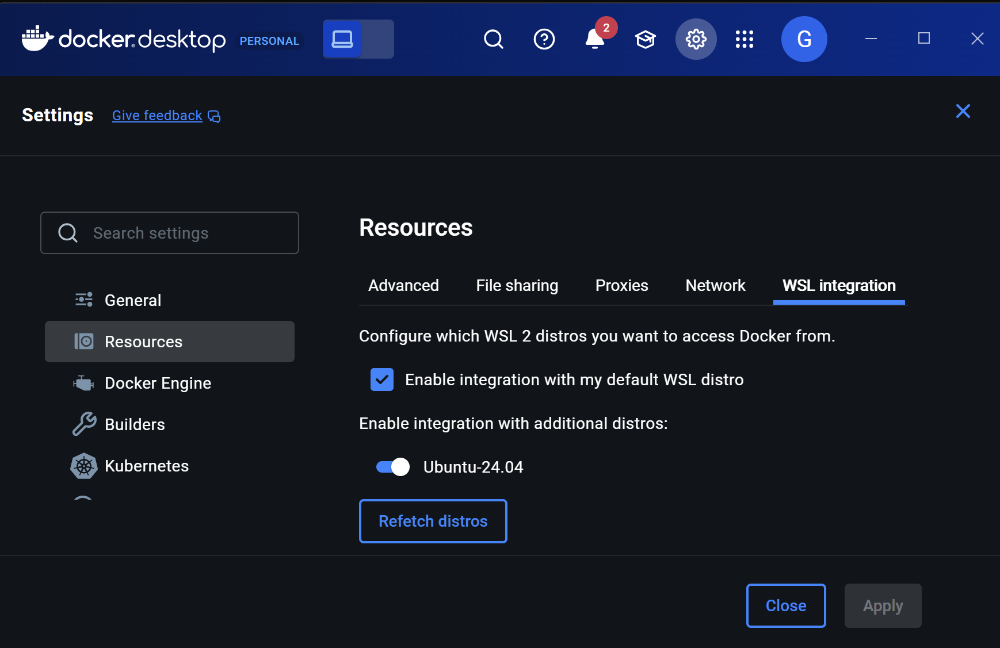
FASE 2: Preparando nuestro taller (dentro del entorno de desarrollo)¶
Atención
A partir de ahora, todos los comandos se ejecutan dentro de tu entorno de desarrollo:
- Windows: Abre Windows Terminal o la terminal de WSL y selecciona el perfil de Ubuntu
- macOS/Linux: Abre tu aplicación de Terminal.
2.1. Instalar herramientas básicas de desarrollo¶
Instalamos utilidades esenciales como curl y herramientas de compilación.
sudo apt update && sudo apt upgrade -y
sudo apt install -y curl wget unzip build-essential
2.2. Instalar Node.js a través de NVM (Node Version Manager)¶
NVM nos permite gestionar múltiples versiones de Node.js.
-
Ejecuta el script de instalación (universal para todos los SO):
curl -o- https://raw.githubusercontent.com/nvm-sh/nvm/v0.40.0/install.sh | bash -
Cierra y vuelve a abrir la terminal para que el comando
nvmesté disponible. -
Ahora, instala la última versión estable (LTS) de Node.js.
nvm install node # Instala la última versión -
Comprueba que todo está correcto (comando universal):
node -v && npm -v
2.3. Instalar PHP y Composer¶
Instalaremos PHP y su gestor de dependencias Composer.
Instalar con APT y PPA¶
Usaremos un repositorio externo de confianza para tener la última versión de PHP.
sudo add-apt-repository ppa:ondrej/php -y
sudo apt update
sudo apt install -y php8.4-cli php8.4-common php8.4-curl php8.4-mbstring php8.4-xml php8.4-zip
Ahora, instalamos Composer de forma global:
curl -sS https://getcomposer.org/installer | php
sudo mv composer.phar /usr/local/bin/composer
Comprueba que las instalaciones son correctas (comandos universales):
php -v && composer -V
2.4. Instalar extensiones en VS Code¶
Abrir VS Code desde WSL¶
Elige una de estas dos opciones:
- Abre VS Code desde la terminal de WSL:
code .
No reconoce la orden code .
Si no reconoce la orden code . añade en la variable PATH, dentro de variables de entorno, la siguiente ruta:
C:\Users\TU_USUARIO\AppData\Local\Programs\Microsoft VS Code
- Abre VS Code desde VS Code directamente: Es fundamental para conectar VS Code con tu entorno Ubuntu y ejecútalo bajo WSL.
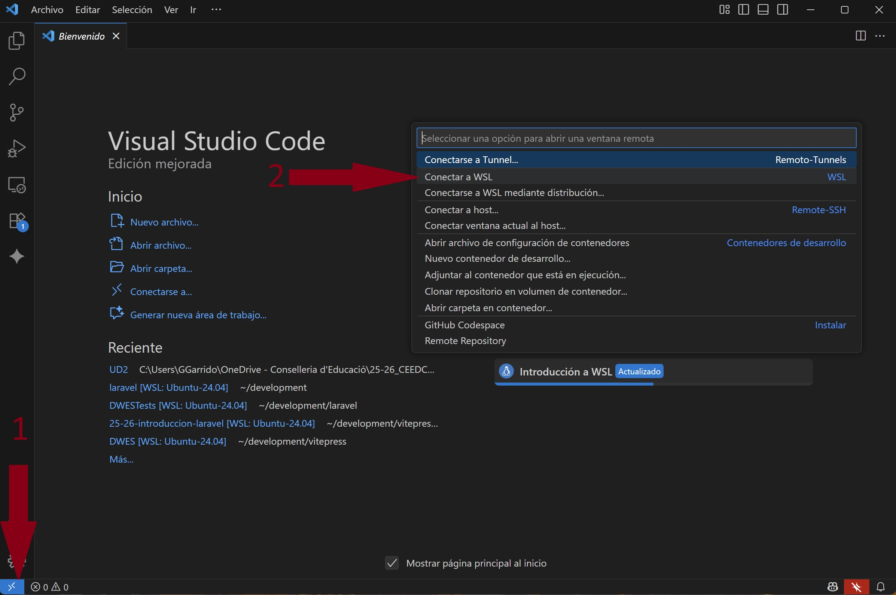
🖼️ Figura 6.4: Conectar a WSL
Ve al panel de Extensiones: VS Code te pedirá instalar extensiones "en el servidor WSL".
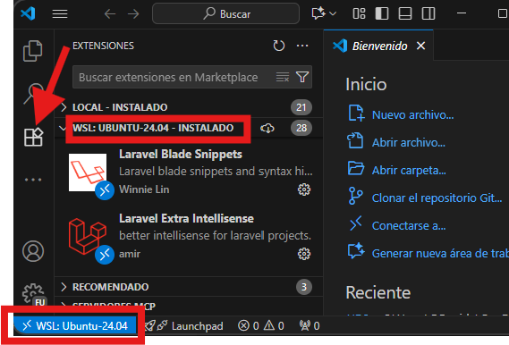
Instala las siguientes:
- Laravel Extra Intellisense (Amir)
- PHP Intelephense (Ben Mewburn)
- Laravel Blade Snippets (Winnie Lin)
- Tailwind CSS IntelliSense (Tailwind Labs)
- PHP Debug (xdebug)
- DBCode - Database Management (dbcode.io)
- MySQL: para conectarte a la base de datos y ejecutar scripts.
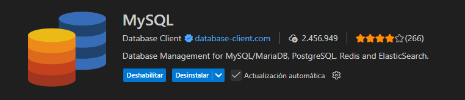
🖼️ Figura 6.6: Extensión MySQL de Visual Studio Code para conectarse a las bbdd
FASE 3: Creación y vinculación del proyecto "Tenda"¶
Esta fase es universal y se realiza completamente en tu terminal (Ubuntu en WSL, o la Terminal en macOS/Linux).
Crear el proyecto de la práctica
Vamos a crear un proyecto, de nombre tenda, que vamos a seguir a lo largo de las siguientes unidades prácticas.
3.1. Crear el directorio de trabajo¶
cd ~
mkdir -p development/laravel
cd development/laravel
3.2. Crear el nuevo proyecto con Composer¶
composer create-project laravel/laravel tenda
cd tenda
3.3. Abrir el proyecto en VS Code¶
Ahora que ya tienes VS Code configurado, vamos a abrir la carpeta del proyecto que acabamos de crear.
- Abre VS Code (si no está ya abierto)
- Ve a File > Open Folder (o presiona
Ctrl + K, Ctrl + O) - Navega a la ruta del proyecto:
\\wsl$\Ubuntu-24.04\home\[tu_usuario]\development\laravel\tenda - Selecciona la carpeta
tenday haz clic en "Select Folder" - Verifica que VS Code se conecta a WSL: Deberías ver en la esquina inferior izquierda que está conectado a WSL
FASE 4: Empezamos con Laravel Sail¶
Ahora que el proyecto está creado vamos a darle vida con los contenedores de Sail. Todos los comandos se ejecutan desde la terminal, dentro del directorio de tu proyecto (tenda).
4.1. Instalar y configurar Sail¶
El comando sail:install preparará tu entorno Docker.
php artisan sail:install --with=mysql,redis
Cuando te pregunte qué servicios deseas, selecciona mysql y redis usando las flechas y la barra espaciadora.
4.2. Configurar el archivo de entorno .env¶
Asegúrate de que tu archivo .env está listo y contiene una APP_KEY. De no ser así, genera lo y añade la clave de la aplicación.
cp .env.example .env
php artisan key:generate
4.3. Crear un alias para Sail¶
Crear alias en bash:
echo "alias sail='./vendor/bin/sail'" >> ~/.bashrc
source ~/.bashrc
4.4. Levantar los contenedores¶
Para que Docker aplique los cambios, ejecuta:
sail up -d --build
El flag -d (detached mode) ejecuta los contenedores en segundo plano, liberando tu terminal para otros comandos. Sin este flag, la terminal quedaría ocupada mostrando los logs de los contenedores.
Ejemplo de respuesta
[+] Running 7/7
✔ sail-8.4/app Built 0.0s
✔ Network tenda_sail Creat... 0.0s
✔ Volume tenda_sail-redis Created 0.0s
✔ Volume tenda_sail-mysql Created 0.0s
✔ Container tenda-mysql-1 Started 0.8s
✔ Container tenda-redis-1 Started 0.8s
✔ Container tenda-laravel.test-1 Started 1.0s
Práctica: (1) Captura de pantalla requerida
Realiza una captura de pantalla de tu terminal mostrando el comando sail up -d --build ejecutándose correctamente con todos los contenedores iniciados.
La captura debe incluir tu prompt usuario@equipo:~/ruta/proyecto$ visible.
Problemas de Arranque
Si encuentras errores como "Another process with pid X is using unix socket file" o "Unable to setup unix socket lock file", sigue estos pasos:
-
Detener todos los contenedores:
Este comando detiene y elimina únicamente los contenedores y volúmenes asociados a tu proyecto actual (tenda), sin afectar a otros proyectos Docker que puedas tener en tu sistema.sail down -v -
Limpiar volúmenes y contenedores:
Este comando elimina todos los contenedores detenidos, redes no utilizadas, imágenes colgantes y volúmenes no referenciados por ningún contenedor. Asegúrate de que no tienes datos importantes en volúmenes no referenciados antes de ejecutar este comando.# CUIDADO: Elimina contenedores detenidos y volúmenes no usados docker system prune -f -
Reiniciar Docker Desktop (Windows/macOS) o el servicio Docker (Linux):
-
Windows/macOS: Cierra y vuelve a abrir Docker Desktop
- Linux:
sudo systemctl restart docker - Volver a levantar los contenedores:
sail up -d --build
Problemas de Permisos en Linux (Ubuntu)
Si después de ejecutar sail up te encuentras con errores de "Permission Denied" (Permiso denegado) al intentar ejecutar comandos o al cargar la web, es muy probable que los archivos de tu proyecto tengan permisos incorrectos.
Para solucionarlo, ejecuta estos comandos en la terminal de tu sistema (no dentro de Sail):
- Detener los contenedores:
sail down - Cambiar el propietario de los archivos (sitúate en la carpeta de tu proyecto):
cd ~/development/laravel/tenda sudo chown -R $USER:$USER . - Volver a levantar los contenedores:
Esto asegura que tu usuario sea el propietario de todos los archivos, evitando conflictos con Docker.
sail up -d
FASE 5: Configuración de Bases de Datos¶
5.1. Preparar configuración en .env¶
Abre tu archivo .env y cambia las siguientes variables:
DB_CONNECTION=mysql
DB_HOST=mysql
DB_PORT=3306
DB_DATABASE=tenda
DB_USERNAME=sail
DB_PASSWORD=password
DB_EXTRA_OPTIONS=
# Variable adicional para evitar warnings por consola
MYSQL_EXTRA_OPTIONS=
5.2. Crear la base de datos¶
Antes de ejecutar las migraciones, debemos crear la base de datos tenda en MySQL.
Ejecuta el cliente de MySQL dentro del contenedor:
sail mysql -u root -ppassword
Ejemplo de respuesta
Reading table information for completion of table and column names
You can turn off this feature to get a quicker startup with -A
Welcome to the MySQL monitor. Commands end with ; or \g.
Your MySQL connection id is 20
Server version: 8.0.32 MySQL Community Server - GPL
Copyright (c) 2000, 2023, Oracle and/or its affiliates.
Oracle is a registered trademark of Oracle Corporation and/or its
affiliates. Other names may be trademarks of their respective
owners.
Type 'help;' or '\h' for help. Type '\c' to clear the current input statement.
mysql>
Verifica con qué usuario estás conectado:
SELECT USER();
Ejemplo de respuesta
+----------------+
| USER() |
+----------------+
| root@localhost |
+----------------+
1 row in set (0.00 sec)
¿No estás conectado como root?
Si el resultado muestra sail@localhost en lugar de root@localhost,
realiza los siguientes pasos:
- Sal del cliente MySQL:
exit
Y conéctate usando docker exec directamente:
-
Identifica el nombre de tu contenedor MySQL:
Deberías ver algo como:docker ps --format "table {{.Names}}\t{{.Image}}" | grep -i mysqltenda-mysql-1 mysql/mysql-server:8.0 -
Conéctate como root usando docker exec:
docker exec -it tenda-mysql-1 mysql -u root -ppassword -
Verifica que estás conectado como root nuevamente:
SELECT USER(); -
Una vez dentro del cliente MySQL como root, crea la base de datos
tenda:CREATE DATABASE IF NOT EXISTS tenda;
Ejemplo de respuesta
Query OK, 1 row affected (0.01 sec)
- Otorga permisos completos al usuario
sailen la base de datostenda:GRANT ALL PRIVILEGES ON tenda.* TO 'sail'@'%';
Ejemplo de respuesta
Query OK, 0 rows affected (0.01 sec)
- Aplica los cambios de permisos:
FLUSH PRIVILEGES;
Ejemplo de respuesta
Query OK, 0 rows affected (0.00 sec)
- Ahora verifica que se ha creado correctamente listando las bases de datos:
SHOW DATABASES;
Ejemplo de respuesta
+--------------------+
| Database |
+--------------------+
| information_schema |
| laravel |
| tenda |
| mysql |
| performance_schema |
| sys |
+--------------------+
6 rows in set (0.00 sec)
Deberías ver laravel (creada por defecto por Sail) y tenda (la que acabas de crear).
¿Por qué la base de datos laravel ya existe?
Al instalar Laravel Sail con MySQL, al iniciar el contenedor por primera vez, MySQL crea automáticamente una base de datos llamada laravel.
- Para salir del cliente de MySQL, escribe:
exit
5.3. Ejecutar las Migraciones¶
Ahora que la base de datos tenda existe, podemos ejecutar las migraciones:
sail artisan migrate:refresh --seed
Ejemplo de respuesta
WARN Migration table not found.
INFO Preparing database.
Creating migration table .............................. 72.26ms DONE
INFO Running migrations.
0001_01_01_000000_create_users_table ................. 441.16ms DONE
0001_01_01_000001_create_cache_table ................. 125.26ms DONE
0001_01_01_000002_create_jobs_table .................. 306.37ms DONE
INFO Seeding database.
Si es la primera vez que ejecutas este comando, es posible que veas un mensaje indicando que no hay migraciones ejecutadas, o que veas las migraciones por defecto de Laravel (usuarios, tokens, etc.). Esto es normal y significa que la conexión funciona correctamente.
5.4. Configuramos la conexión con DBCode¶
Antes de configurar DBCode, necesitamos verificar el puerto exacto en el que MySQL está escuchando dentro de nuestro contenedor.
Ejecuta el siguiente comando para ver el estado de tus contenedores y sus puertos:
sail ps
Ejemplo de respuesta
NAME IMAGE COMMAND SERVICE CREATED STATUS PORTS
tenda-laravel.test-1 sail-8.4/app "start-container" laravel.test 7 minutes ago Up 7 minutes 0.0.0.0:80->80/tcp, [::]:80->80/tcp, 0.0.0.0:5173->5173/tcp, [::]:5173->5173/tcp
tenda-mysql-1 mysql/mysql-server:8.0 "/entrypoint.sh mysq…" mysql 7 minutes ago Up 7 minutes (healthy) 0.0.0.0:3306->3306/tcp, [::]:3306->3306/tcp
tenda-redis-1 redis:alpine "docker-entrypoint.s…" redis 7 minutes ago Up 7 minutes (healthy) 0.0.0.0:6379->6379/tcp, [::]:6379->6379/tcp
En la columna PORTS, busca la línea de mysql. Verás algo como 0.0.0.0:3306->3306/tcp, donde el primer número (antes de ->), en este caso 3306, es el puerto expuesto en tu máquina local.
Puerto por defecto
Por defecto, Laravel Sail expone MySQL en el puerto 3306. Sin embargo, si ya tienes otro servicio MySQL ejecutándose en tu sistema, Sail podría usar un puerto diferente (como 3307, 3308, etc.).
- Una vez verificado el puerto, configura la conexión en DBCode:
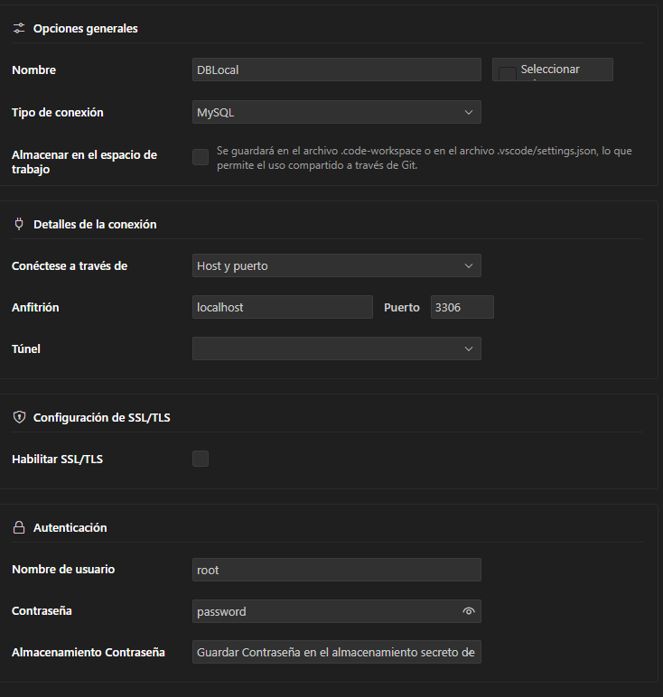
- Revisamos si se han realizado las migraciones:
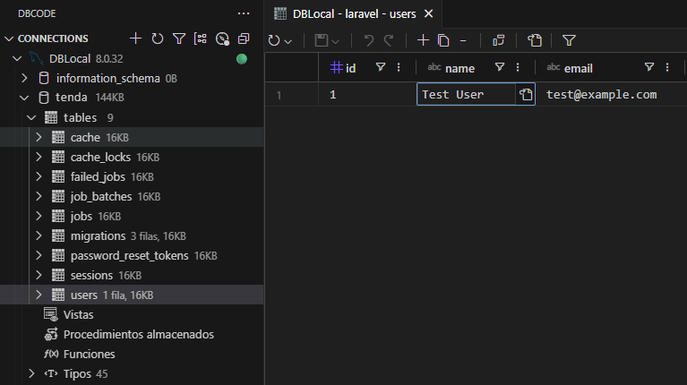
🖼️ Figura 6.8: Tablas de las migraciones en BD > tables
5.5. Verificar que la aplicación funciona¶
Abre tu navegador web y visita http://localhost. Deberías ver la página de bienvenida de Laravel.
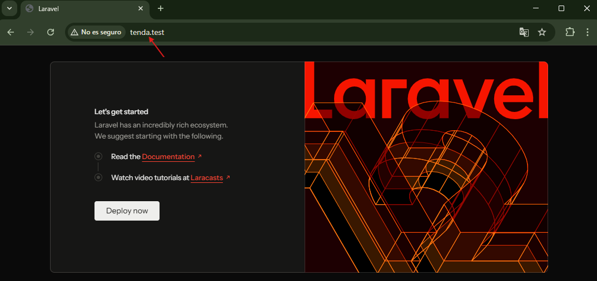
Cuidado
Si en lugar de ver la página de Laravel, ves la página de Apache de Ubuntu, es porque Apache está usando el mismo puerto.
- Parar Apache ahora
sudo systemctl stop apache2 - Si quieres que no se inicie al arrancar el sistema:
sudo systemctl disable apache2
Práctica: (2) Captura de pantalla requerida
Realiza una captura de pantalla de la página inicial de Laravel funcionando en http://localhost.
5.6. Verificación del entorno¶
Una vez completada la configuración, es importante verificar que todos los servicios estén funcionando correctamente. Ejecuta los siguientes comandos para confirmar:
- Verificar Estado de los Contenedores
sail ps
El comando sail ps muestra el estado actual de los contenedores Docker que utiliza tu entorno de desarrollo de Laravel Sail. Al ejecutarlo, verás una tabla con información como el nombre del contenedor, la imagen utilizada, el servicio que representa (por ejemplo, laravel.test, mysql, redis), el tiempo que llevan en ejecución y los puertos expuestos. Si todo está funcionando correctamente, los contenedores aparecerán con el estado "Up" o "running", lo que indica que los servicios (aplicación Laravel, base de datos MySQL, Redis, etc.) están activos y listos para usarse.
Ejemplo de respuesta
NAME IMAGE COMMAND SERVICE CREATED STATUS PORTS
tenda-laravel.test-1 sail-8.4/app "start-container" laravel.test 7 minutes ago Up 7 minutes 0.0.0.0:80->80/tcp, [::]:80->80/tcp, 0.0.0.0:5173->5173/tcp, [::]:5173->5173/tcp
tenda-mysql-1 mysql/mysql-server:8.0 "/entrypoint.sh mysq…" mysql 7 minutes ago Up 7 minutes (healthy) 0.0.0.0:3306->3306/tcp, [::]:3306->3306/tcp
tenda-redis-1 redis:alpine "docker-entrypoint.s…" redis 7 minutes ago Up 7 minutes (healthy) 0.0.0.0:6379->6379/tcp, [::]:6379->6379/tcp
- Verificar Conexiones de Base de Datos
# Probar conexión MySQL sail php artisan migrate:status
Al ejecutar el status nos mostrará que "tablas" estan creadas en MySQL.
Ejemplo de respuesta
Migration name ......................................................... Batch / Status
0001_01_01_000000_create_users_table .......................................... [1] Ran
0001_01_01_000001_create_cache_table .......................................... [1] Ran
0001_01_01_000002_create_jobs_table ........................................... [1] Ran
FASE 6: Frontend, Calidad de Código y Depuración¶
6.1. Frontend con Vite y Tailwind CSS¶
- Instalar dependencias de Node.js:
sail npm install
Ejemplo de respuesta
added 158 packages, and audited 159 packages in 12s
30 packages are looking for funding
run `npm fund` for details
found 0 vulnerabilities
- Añadir estilos personalizados: Abre el archivo
resources/css/app.cssy añade al final del archivo (después del contenido existente) los siguientes estilos personalizados:/* Estilos personalizados para la tienda */ .hero-gradient { background: linear-gradient(135deg, #6997ca 0%, #4b7db2 100%); } .product-card { transition: all 0.3s ease; } .product-card:hover { transform: translateY(-5px); box-shadow: 0 10px 25px rgba(0, 0, 0, 0.1); } .category-badge { background: linear-gradient(135deg, #63d1c1 0%, #41b8a5 100%); } .stock-indicator { position: relative; } .stock-indicator::before { content: ''; position: absolute; left: -8px; top: 50%; transform: translateY(-50%); width: 6px; height: 6px; border-radius: 50%; } .stock-indicator.in-stock::before { background-color: #10b981; } .stock-indicator.low-stock::before { background-color: #ef4444; } .dark-mode-toggle { transition: all 0.3s ease; } .dark-mode-toggle:hover { transform: scale(1.1); } .mobile-menu { animation: slideDown 0.3s ease-out; } @keyframes slideDown { from { opacity: 0; transform: translateY(-10px); } to { opacity: 1; transform: translateY(0); } }
No modifiques el contenido existente
El archivo app.css ya contiene configuración importante de Tailwind CSS. Solo añade estos estilos al final del archivo, sin modificar las líneas que ya están.
-
Abrir el archivo Blade principal: Abre
resources/views/welcome.blade.phpy sustituye todo su contenido por el siguiente código:<!DOCTYPE html> <html lang="es"> <head> <meta charset="UTF-8"> <meta name="viewport" content="width=device-width, initial-scale=1.0"> <title>Mi Tienda Online</title> <script src="https://cdn.tailwindcss.com"></script> <script> tailwind.config = { darkMode: 'class', theme: { extend: { colors: { primary: { 500: '#6997ca', 600: '#4b7db2', 700: '#316298', }, secondary: { 500: '#63d1c1', 600: '#41b8a5', } } } } } </script> @vite(['resources/css/app.css']) </head> <body class="bg-gray-50 dark:bg-gray-900"> <!-- Header con navegación --> <header class="bg-white dark:bg-gray-800 shadow-lg relative"> <div class="container mx-auto px-6 py-4"> <div class="flex items-center justify-between"> <!-- Logo --> <div class="flex items-center space-x-4"> <a href="/" class="text-2xl font-bold text-primary-600 hover:text-primary-700 transition">🛍️ Mi Tienda</a> </div> <!-- Navegación desktop --> <nav class="hidden lg:flex space-x-8"> <a href="#" class="text-gray-700 dark:text-gray-300 hover:text-primary-600 transition">Inicio</a> <a href="#" class="text-gray-700 dark:text-gray-300 hover:text-primary-600 transition">Productos</a> <a href="#" class="text-gray-700 dark:text-gray-300 hover:text-primary-600 transition">Categorías</a> <a href="#" class="text-gray-700 dark:text-gray-300 hover:text-primary-600 transition">Ofertas</a> <a href="#" class="text-gray-700 dark:text-gray-300 hover:text-primary-600 transition">Contacto</a> </nav> <!-- Botones desktop --> <div class="hidden lg:flex items-center space-x-4"> <button class="text-gray-700 dark:text-gray-300 hover:text-primary-600 transition"> 🛒 Carrito (0) </button> <button class="bg-primary-600 text-white px-4 py-2 rounded-lg hover:bg-primary-700 transition"> Iniciar Sesión </button> <button class="border-2 border-primary-600 text-primary-600 px-4 py-2 rounded-lg hover:bg-primary-600 hover:text-white transition"> Registrarse </button> <!-- Botón de modo oscuro desktop --> <button id="darkModeToggleDesktop" class="text-gray-700 dark:text-gray-300 hover:text-primary-600 transition p-2 rounded-full"> 🌙 </button> </div> <!-- Botones móvil/tablet --> <div class="flex items-center space-x-2 lg:hidden"> <!-- Botón de modo oscuro --> <button id="darkModeToggle" class="text-gray-700 dark:text-gray-300 hover:text-primary-600 transition p-2 rounded-full dark-mode-toggle"> 🌙 </button> <!-- Botón menú móvil --> <button id="mobileMenuToggle" class="text-gray-700 dark:text-gray-300 hover:text-primary-600 transition"> <svg class="w-6 h-6" fill="none" stroke="currentColor" viewBox="0 0 24 24"> <path stroke-linecap="round" stroke-linejoin="round" stroke-width="2" d="M4 6h16M4 12h16M4 18h16"></path> </svg> </button> </div> </div> <!-- Menú móvil --> <div id="mobileMenu" class="lg:hidden hidden mt-4 pb-4 border-t border-gray-200 dark:border-gray-700 mobile-menu"> <nav class="flex flex-col space-y-4 pt-4"> <a href="#" class="text-gray-700 dark:text-gray-300 hover:text-primary-600 transition">Inicio</a> <a href="#" class="text-gray-700 dark:text-gray-300 hover:text-primary-600 transition">Productos</a> <a href="#" class="text-gray-700 dark:text-gray-300 hover:text-primary-600 transition">Categorías</a> <a href="#" class="text-gray-700 dark:text-gray-300 hover:text-primary-600 transition">Ofertas</a> <a href="#" class="text-gray-700 dark:text-gray-300 hover:text-primary-600 transition">Contacto</a> <div class="flex flex-col space-y-2 pt-4 border-t border-gray-200 dark:border-gray-700"> <button class="text-left text-gray-700 dark:text-gray-300 hover:text-primary-600 transition"> 🛒 Carrito (0) </button> <button class="bg-primary-600 text-white px-4 py-2 rounded-lg hover:bg-primary-700 transition text-left"> Iniciar Sesión </button> <button class="border-2 border-primary-600 text-primary-600 px-4 py-2 rounded-lg hover:bg-primary-600 hover:text-white transition text-left"> Registrarse </button> </div> </nav> </div> </div> </header> <!-- Hero Section --> <section class="hero-gradient text-white py-20"> <div class="container mx-auto px-6 text-center"> <h2 class="text-4xl md:text-6xl font-extrabold leading-tight mb-6"> Bienvenido a Mi Tienda </h2> <p class="text-xl md:text-2xl text-blue-100 mb-8 max-w-3xl mx-auto"> Descubre una amplia variedad de productos de calidad. Encuentra lo que buscas al mejor precio. </p> <div class="flex flex-wrap justify-center gap-4"> <button class="bg-white text-primary-600 font-bold py-4 px-8 rounded-full hover:bg-gray-100 transition duration-300 ease-in-out transform hover:scale-105"> Ver Productos </button> <button class="border-2 border-white text-white font-bold py-4 px-8 rounded-full hover:bg-white hover:text-primary-600 transition duration-300 ease-in-out"> Ofertas Especiales </button> </div> </div> </section> <!-- Categorías de Productos --> <section class="py-16"> <div class="container mx-auto px-6"> <h3 class="text-3xl font-bold mb-12 text-center text-gray-900 dark:text-white"> Nuestras Categorías </h3> <div class="grid grid-cols-1 md:grid-cols-2 lg:grid-cols-4 gap-8"> <div class="bg-white dark:bg-gray-800 rounded-lg shadow-lg p-6 product-card cursor-pointer"> <div class="text-4xl text-primary-500 mb-4">📦</div> <h4 class="text-xl font-bold mb-2 text-gray-900 dark:text-white">Categoría 1</h4> <p class="text-gray-600 dark:text-gray-300 mb-4"> Descripción de la primera categoría de productos. </p> <button class="text-primary-600 font-semibold hover:text-primary-700 transition"> Ver Productos → </button> </div> <div class="bg-white dark:bg-gray-800 rounded-lg shadow-lg p-6 product-card cursor-pointer"> <div class="text-4xl text-primary-500 mb-4">🛍️</div> <h4 class="text-xl font-bold mb-2 text-gray-900 dark:text-white">Categoría 2</h4> <p class="text-gray-600 dark:text-gray-300 mb-4"> Descripción de la segunda categoría de productos. </p> <button class="text-primary-600 font-semibold hover:text-primary-700 transition"> Ver Productos → </button> </div> <div class="bg-white dark:bg-gray-800 rounded-lg shadow-lg p-6 product-card cursor-pointer"> <div class="text-4xl text-primary-500 mb-4">⭐</div> <h4 class="text-xl font-bold mb-2 text-gray-900 dark:text-white">Categoría 3</h4> <p class="text-gray-600 dark:text-gray-300 mb-4"> Descripción de la tercera categoría de productos. </p> <button class="text-primary-600 font-semibold hover:text-primary-700 transition"> Ver Productos → </button> </div> <div class="bg-white dark:bg-gray-800 rounded-lg shadow-lg p-6 product-card cursor-pointer"> <div class="text-4xl text-primary-500 mb-4">🎯</div> <h4 class="text-xl font-bold mb-2 text-gray-900 dark:text-white">Categoría 4</h4> <p class="text-gray-600 dark:text-gray-300 mb-4"> Descripción de la cuarta categoría de productos. </p> <button class="text-primary-600 font-semibold hover:text-primary-700 transition"> Ver Productos → </button> </div> </div> </div> </section> <!-- Productos Destacados --> <section class="py-16 bg-gray-100 dark:bg-gray-800"> <div class="container mx-auto px-6"> <h3 class="text-3xl font-bold mb-12 text-center text-gray-900 dark:text-white"> Productos Destacados </h3> <div class="grid grid-cols-1 md:grid-cols-2 lg:grid-cols-3 gap-8"> <div class="bg-white dark:bg-gray-700 rounded-lg shadow-lg overflow-hidden product-card"> <div class="h-48 bg-gray-200 dark:bg-gray-600 flex items-center justify-center"> <span class="text-4xl">📦</span> </div> <div class="p-6"> <h4 class="text-xl font-bold mb-2 text-gray-900 dark:text-white">Producto 1</h4> <p class="text-gray-600 dark:text-gray-300 mb-4">Descripción del primer producto</p> <div class="flex items-center justify-between"> <span class="text-2xl font-bold text-primary-600">€XX</span> <button class="bg-primary-600 text-white px-4 py-2 rounded-lg hover:bg-primary-700 transition"> Añadir al Carrito </button> </div> </div> </div> <div class="bg-white dark:bg-gray-700 rounded-lg shadow-lg overflow-hidden product-card"> <div class="h-48 bg-gray-200 dark:bg-gray-600 flex items-center justify-center"> <span class="text-4xl">🛍️</span> </div> <div class="p-6"> <h4 class="text-xl font-bold mb-2 text-gray-900 dark:text-white">Producto 2</h4> <p class="text-gray-600 dark:text-gray-300 mb-4">Descripción del segundo producto</p> <div class="flex items-center justify-between"> <span class="text-2xl font-bold text-primary-600">€XX</span> <button class="bg-primary-600 text-white px-4 py-2 rounded-lg hover:bg-primary-700 transition"> Añadir al Carrito </button> </div> </div> </div> <div class="bg-white dark:bg-gray-700 rounded-lg shadow-lg overflow-hidden product-card"> <div class="h-48 bg-gray-200 dark:bg-gray-600 flex items-center justify-center"> <span class="text-4xl">⭐</span> </div> <div class="p-6"> <h4 class="text-xl font-bold mb-2 text-gray-900 dark:text-white">Producto 3</h4> <p class="text-gray-600 dark:text-gray-300 mb-4">Descripción del tercer producto</p> <div class="flex items-center justify-between"> <span class="text-2xl font-bold text-primary-600">€XX</span> <button class="bg-primary-600 text-white px-4 py-2 rounded-lg hover:bg-primary-700 transition"> Añadir al Carrito </button> </div> </div> </div> </div> </div> </section> <!-- Footer --> <footer class="bg-gray-800 text-white py-12"> <div class="container mx-auto px-6"> <div class="grid grid-cols-1 md:grid-cols-4 gap-8"> <div> <h5 class="text-xl font-bold mb-4">🛍️ Mi Tienda</h5> <p class="text-gray-400"> Tu tienda de confianza para encontrar los mejores productos. </p> </div> <div> <h6 class="font-bold mb-4">Enlaces Rápidos</h6> <ul class="space-y-2 text-gray-400"> <li><a href="#" class="hover:text-white transition">Sobre Nosotros</a></li> <li><a href="#" class="hover:text-white transition">Política de Privacidad</a></li> <li><a href="#" class="hover:text-white transition">Términos y Condiciones</a></li> <li><a href="#" class="hover:text-white transition">Envíos y Devoluciones</a></li> </ul> </div> <div> <h6 class="font-bold mb-4">Atención al Cliente</h6> <ul class="space-y-2 text-gray-400"> <li>📞 Teléfono de contacto</li> <li>📧 Email de contacto</li> <li>💬 Chat en vivo</li> <li>🕒 Horario de atención</li> </ul> </div> <div> <h6 class="font-bold mb-4">Síguenos</h6> <div class="flex space-x-4"> <a href="#" class="text-gray-400 hover:text-white transition">📘 Facebook</a> <a href="#" class="text-gray-400 hover:text-white transition">📷 Instagram</a> <a href="#" class="text-gray-400 hover:text-white transition">🐦 Twitter</a> </div> </div> </div> <div class="border-t border-gray-700 mt-8 pt-8 text-center text-gray-400"> <p>© 2025 Mi Tienda. Todos los derechos reservados.</p> </div> </div> </footer> <script> // Toggle dark mode functionality function toggleDarkMode() { document.documentElement.classList.toggle('dark'); localStorage.setItem('darkMode', document.documentElement.classList.contains('dark')); // Cambiar el icono según el modo para ambos botones const toggleButton = document.getElementById('darkModeToggle'); const toggleButtonDesktop = document.getElementById('darkModeToggleDesktop'); if (document.documentElement.classList.contains('dark')) { if (toggleButton) toggleButton.innerHTML = '☀️'; if (toggleButtonDesktop) toggleButtonDesktop.innerHTML = '☀️'; } else { if (toggleButton) toggleButton.innerHTML = '🌙'; if (toggleButtonDesktop) toggleButtonDesktop.innerHTML = '🌙'; } } // Toggle mobile menu functionality function toggleMobileMenu() { const mobileMenu = document.getElementById('mobileMenu'); const menuToggle = document.getElementById('mobileMenuToggle'); mobileMenu.classList.toggle('hidden'); // Cambiar el icono del botón if (mobileMenu.classList.contains('hidden')) { menuToggle.innerHTML = ` <svg class="w-6 h-6" fill="none" stroke="currentColor" viewBox="0 0 24 24"> <path stroke-linecap="round" stroke-linejoin="round" stroke-width="2" d="M4 6h16M4 12h16M4 18h16"></path> </svg> `; } else { menuToggle.innerHTML = ` <svg class="w-6 h-6" fill="none" stroke="currentColor" viewBox="0 0 24 24"> <path stroke-linecap="round" stroke-linejoin="round" stroke-width="2" d="M6 18L18 6M6 6l12 12"></path> </svg> `; } } // Check for saved dark mode preference document.addEventListener('DOMContentLoaded', function() { if (localStorage.getItem('darkMode') === 'true') { document.documentElement.classList.add('dark'); const toggleButton = document.getElementById('darkModeToggle'); const toggleButtonDesktop = document.getElementById('darkModeToggleDesktop'); if (toggleButton) toggleButton.innerHTML = '☀️'; if (toggleButtonDesktop) toggleButtonDesktop.innerHTML = '☀️'; } // Configurar los botones const toggleButton = document.getElementById('darkModeToggle'); const toggleButtonDesktop = document.getElementById('darkModeToggleDesktop'); if (toggleButton) toggleButton.onclick = toggleDarkMode; if (toggleButtonDesktop) toggleButtonDesktop.onclick = toggleDarkMode; document.getElementById('mobileMenuToggle').onclick = toggleMobileMenu; }); </script> </body> </html> -
Compilar los assets: Para que se cargue el CSS personalizado, ejecuta el siguiente comando para compilar los assets:
sail npm run build
Comandos de compilación para desarrollo continuo
Si se están haciendo cambios frecuentes en CSS/JS, se necesitaría mantener una consola abierta y ejecutar sail npm run dev. De este modo, se compilan los assets y se actualizan los cambios automáticamente.
Si vuelves a ir al localhost, deberías ver tu aplicación Laravel en funcionamiento con los estilos personalizados aplicados.
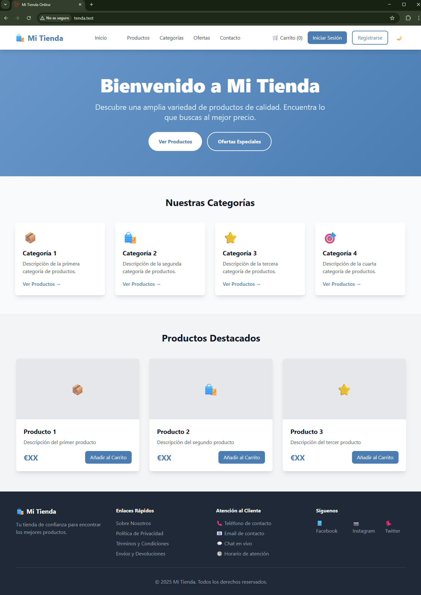
Práctica: (3) Captura de pantalla requerida
Personaliza tu Welcome:
- Elige una temática para tu tienda online (por ejemplo: librería, tienda de ropa, electrónica, productos ecológicos, etc.).
- Sustituye todos los datos estáticos del ejemplo (nombre de la tienda, secciones, productos, datos de contacto, redes sociales, etc.) por información relacionada con la temática que hayas elegido.
- No modifiques la estructura HTML ni el CSS, solo cambia los textos, imágenes y datos para que reflejen tu tienda personalizada.
Ejemplo: Si eliges una tienda de libros, cambia "Mi Tienda" por el nombre de tu librería, los productos por libros, los datos de contacto por los tuyos, etc.
Así, tu página Welcome será única y adaptada a tu proyecto.
Realiza una captura de pantalla de la página.
6.2. Configurar herramienta Laravel Telescope¶
Laravel Telescope es una herramienta de depuración para Laravel que te permite monitorear solicitudes, excepciones, consultas de base de datos, eventos y más. Aquí te explico cómo integrarlo en tu proyecto:
- Ejecuta este comando en la terminal dentro del directorio de tu proyecto:
sail composer require laravel/telescope --dev
Ejemplo de respuesta
INFO Discovering packages.
laravel/pail ........................................................... DONE
laravel/sail ........................................................... DONE
laravel/telescope ...................................................... DONE
laravel/tinker ......................................................... DONE
nesbot/carbon .......................................................... DONE
nunomaduro/collision ................................................... DONE
nunomaduro/termwind .................................................... DONE
81 packages you are using are looking for funding.
Use the `composer fund` command to find out more!
> @php artisan vendor:publish --tag=laravel-assets --ansi --force
INFO No publishable resources for tag [laravel-assets].
No security vulnerability advisories found.
Using version ^5.13 for laravel/telescope
sail php artisan telescope:install
Ejemplo de respuesta
artur@pc_classe:~/development/laravel/tenda$ sail php artisan telescope:install
Publishing Telescope Service Provider...
Publishing Telescope Configuration...
Publishing Telescope Migrations...
Telescope scaffolding installed successfully.
sail php artisan migrate
Ejemplo de respuesta
artur@pc_classe:~/development/laravel/tenda$ sail php artisan migrate
INFO Running migrations.
2025_09_30_140225_create_telescope_entries_table ................ 921.55ms DONE
-
Una vez configurado, accede a Telescope en una nueva pestaña o ventana de tu navegador visitando Telescope.
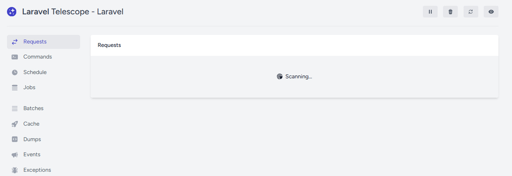
🖼️ Figura 6.11: Menú de Telescope -
Al recargar la página inicial de Laravel verás cómo en la pantalla de Telescope te proporciona información sobre las rutas visitadas.
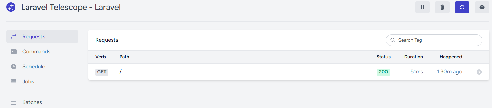
🖼️ Figura 6.12: Desde Telecope > Requests podremos ver las rutas visitadas
Práctica: (4) Captura de pantalla requerida
Realiza una captura de pantalla de Telescope mostrando las rutas visitadas después de recargar la página inicial. La captura debe incluir tu terminal con el prompt usuario@equipo:~/ruta/proyecto$ visible.
Tómate tu tiempo para revisar las diferentes opciones que tiene Telescope. Es una herramienta muy útil y potente que puede que te ayude durante la realización de las futuras prácticas.
6.3. Instalación de PHPStan para análisis de código estático:¶
- Abre una terminal en la raíz de tu proyecto.
- Ejecuta el siguiente comando para instalar PHPStan:
sail composer require --dev phpstan/phpstan
Ejemplo de respuesta
#...
82 packages you are using are looking for funding.
Use the `composer fund` command to find out more!
> @php artisan vendor:publish --tag=laravel-assets --ansi --force
INFO No publishable resources for tag [laravel-assets].
No security vulnerability advisories found.
Using version ^2.1 for phpstan/phpstan
-
Crear el archivo
phpstan.neonen la raíz del proyecto:nano phpstan.neon -
Agrega la siguiente configuración:
parameters: level: 5 paths: - app excludePaths: - tests/* -
Ejecuta el análisis:
sail php vendor/bin/phpstan analyse
Ejemplo de respuesta
Note: Using configuration file /var/www/html/phpstan.neon.
4/4 [▓▓▓▓▓▓▓▓▓▓▓▓▓▓▓▓▓▓▓▓▓▓▓▓▓▓▓▓] 100%
[OK] No errors
Práctica: (5) Captura de pantalla requerida
Realiza una captura de pantalla de tu terminal mostrando el comando sail php vendor/bin/phpstan analyse ejecutado correctamente sin errores. La captura debe incluir tu prompt usuario@equipo:~/ruta/proyecto$ visible.
6.4. Instalación de PHP_CodeSniffer para validación de estilo¶
- Abre una terminal en la raíz de tu proyecto.
sail composer require --dev squizlabs/php_codesniffer
Ejemplo de respuesta
#...
83 packages you are using are looking for funding.
Use the `composer fund` command to find out more!
> @php artisan vendor:publish --tag=laravel-assets --ansi --force
INFO No publishable resources for tag [laravel-assets].
No security vulnerability advisories found.
Using version ^4.0 for squizlabs/php_codesniffer
-
Crea un archivo de configuración
.phpcs.xmlen la raíz:nano .phpcs.xml -
Añade la siguiente configuración:
<?xml version="1.0"?> <ruleset name="Laravel Coding Standard"> <rule ref="PSR12"/> <file>app</file> </ruleset> -
Ejecuta la validación:
sail php vendor/bin/phpcs --standard=PSR12 app --report=summary
Ejemplo de respuesta
PHP CODE SNIFFER REPORT SUMMARY
----------------------------------------------------------------------
FILE ERRORS WARNINGS
----------------------------------------------------------------------
/var/www/html/app/Models/User.php 1 0
----------------------------------------------------------------------
A TOTAL OF 1 ERROR AND 0 WARNINGS WERE FOUND IN 1 FILE
----------------------------------------------------------------------
PHPCBF CAN FIX 1 OF THESE SNIFF VIOLATIONS AUTOMATICALLY
----------------------------------------------------------------------
Time: 40ms; Memory: 12MB
Práctica: (6) Captura de pantalla requerida
Realiza una captura de pantalla de tu terminal mostrando el comando sail php vendor/bin/phpcs --standard=PSR12 app --report=summary ejecutado. La captura debe incluir tu prompt usuario@equipo:~/ruta/proyecto$ visible.
- Para corregir automáticamente los errores de estilo, puedes usar el siguiente comando:
sail php vendor/bin/phpcbf --standard=PSR12 app
Ejemplo de respuesta
PHPCBF RESULT SUMMARY
----------------------------------------------------------------------
FILE FIXED REMAINING
----------------------------------------------------------------------
/var/www/html/app/Models/User.php 1 0
----------------------------------------------------------------------
A TOTAL OF 1 ERROR WERE FIXED IN 1 FILE
----------------------------------------------------------------------
Time: 50ms; Memory: 12MB
6.5. Instalación de Laravel Pint para formatear¶
- Abre una terminal en la raíz de tu proyecto.
sail composer require --dev laravel/pint
Ejemplo de respuesta
#...
83 packages you are using are looking for funding.
Use the `composer fund` command to find out more!
> @php artisan vendor:publish --tag=laravel-assets --ansi --force
INFO No publishable resources for tag [laravel-assets].
No security vulnerability advisories found.
Using version ^1.25 for laravel/pint
-
Crea un archivo de configuración
pint.jsonen la raíz del proyecto:nano pint.json{ "preset": "laravel" } -
Si solo quieres verificar si el código necesita formato sin aplicar los cambios, usa la opción --test:
sail php vendor/bin/pint --test
Ejemplo de respuesta
.⨯...........................
───────────────────────────────────────────────────────── Laravel
FAIL .................................................... 29 files, 1 style issue
⨯ app/Models/User.php class_attributes_separation
Explicación del error
Laravel Pint detecta como un problema de estilo cuando se usan varios use de traits dentro de una clase y no se deja una línea en blanco entre ellos. Es decir, cada declaración use de un trait debe estar separada por al menos una línea en blanco para cumplir con el estándar de estilo.
Ejemplo de código incorrecto
class User extends Authenticatable
{
/** @use HasFactory<\Database\Factories\UserFactory> */
use HasFactory;
use Notifiable;
// El resto del código
}
Ejemplo de código correcto
class User extends Authenticatable
{
/** @use HasFactory<\Database\Factories\UserFactory> */
use HasFactory;
use Notifiable;
// El resto del código
}
La línea en blanco entre los use de traits es la que soluciona el error reportado por Pint.
- Puedes ejecutar Pint para formatear tu código en cualquier momento con el siguiente comando:
sail php vendor/bin/pint
Ejemplo de respuesta
.✓...........................
───────────────────────────────────────────────────────── Laravel
FIXED .................................................... 29 files, 1 style issue fixed
✓ app/Models/User.php
Práctica: (7) Captura de pantalla requerida
Realiza una captura de pantalla de tu terminal mostrando el comando sail php vendor/bin/pint ejecutado correctamente. La captura debe incluir tu prompt usuario@equipo:~/ruta/proyecto$ visible.
Opción B: Práctica a Entregar de Entorno Moderno con Laragon
Laragon es un entorno de desarrollo local para Windows (tipo “servidor local”)
pensado para crear y probar proyectos web en tu PC sin subirlos a Internet.
Qué trae normalmente (y para qué sirve):
- Apache o Nginx: el servidor web.
- PHP (con varias versiones, fácil de cambiar).
- MySQL/MariaDB (base de datos).
- Herramientas extra habituales: Composer, Git, Node.js, etc. (según cómo lo instales/configures).
Por qué se usa mucho:
- Instalación y uso muy rápido (Start/Stop del servidor).
- Permite tener proyectos en C:\laragon\www... y acceder en el navegador.
- Suele crear “dominios” locales cómodos (por ejemplo, miproyecto.test) si activas esa opción.
- Va muy bien para Laravel, WordPress, PHP “a pelo”, etc.
Ejemplo típico con Laravel:
- Creas el proyecto dentro de C:\laragon\www\miapp
- Arrancas Laragon
- Entras a http://localhost/miapp/public o a un dominio local si lo has configurado.
FASE 1: Instalar Laragon¶
Podemos descargarlo desde su página oficial Laragon.
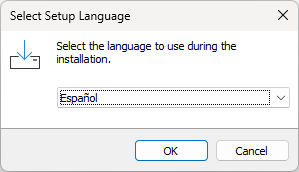
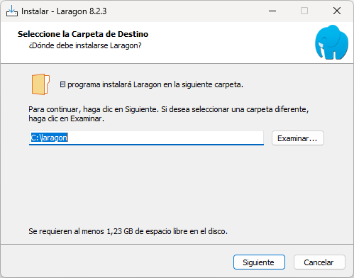
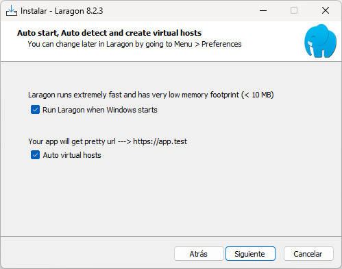
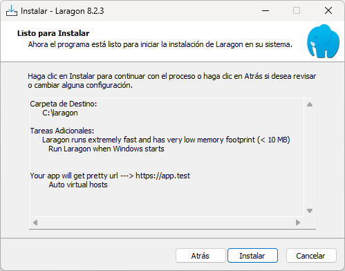
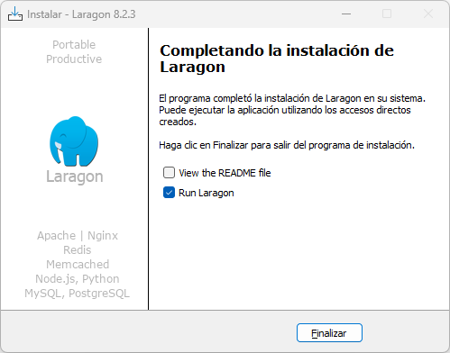
Si accedemos a localhost (puerto 80 por defecto):
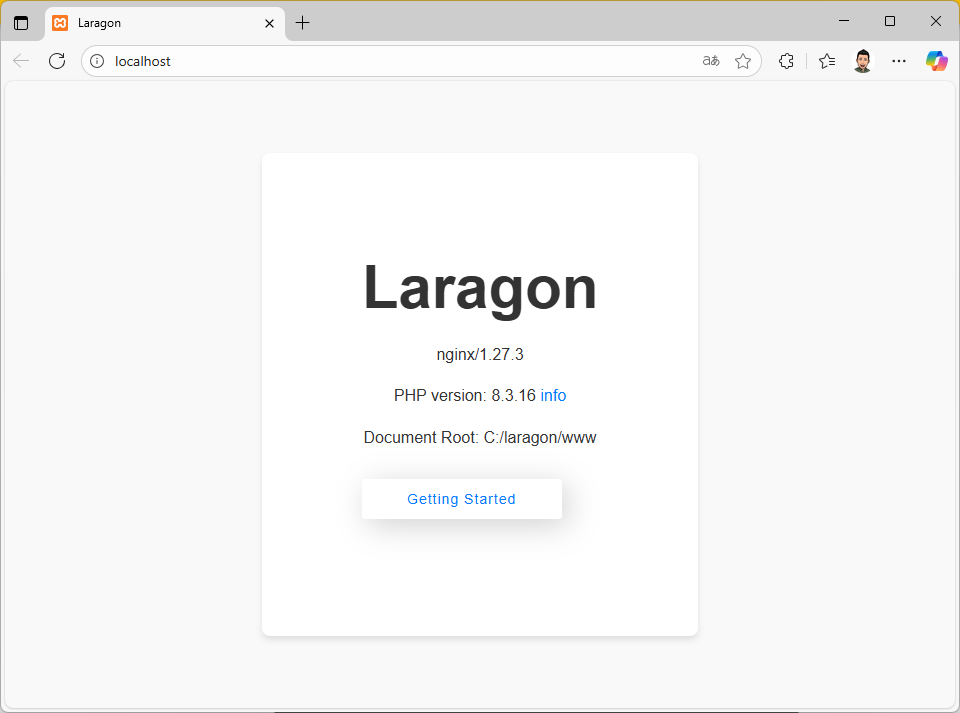
FASE 2: Configuración¶
Una vez instalado, lo podemos encontrar en el systray:
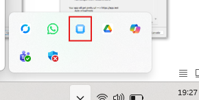
Antes de nada, vamos a configurar los servicios que queremos que están en marcha en nuestro servidor y los puertos que usarán. Para ello, accedemos al botón de Preferencias:
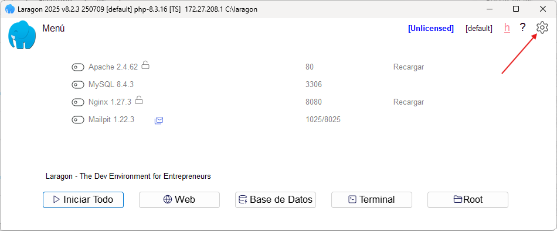
- En la pestaña General observamos aspectos como dónde se guardan los proyectos, dónde se guarda la información y cómo se nombran los hosts virtuales (por ejemplo nuestroProyecto.test).
- En la pestaña Servicios&Puertos marcaremos
MySQL, con el puerto 3307 por ejemplo, yNginx, con el puerto 80: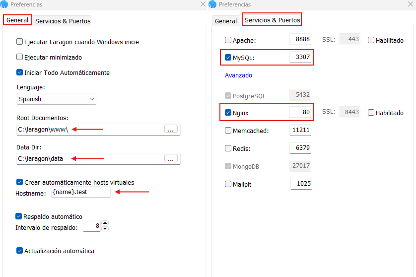
🖼️ Figura 6.21: Menú Preferencias: Pestaña General | Pestaña Servicios&Puertos
Nos quedaría de la siguiente forma:
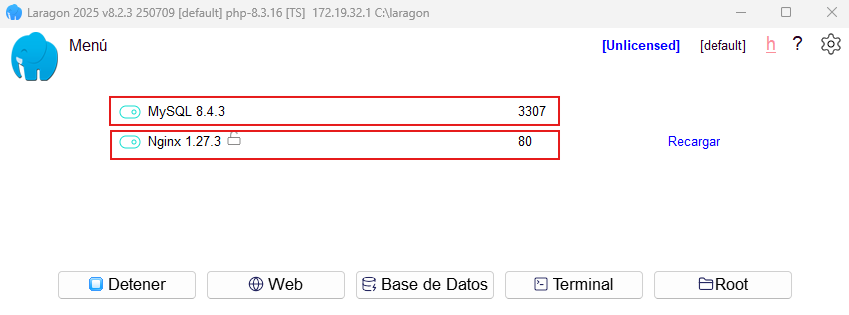
FASE 3: Creación del proyecto¶
Crear el proyecto de la práctica
Vamos a crear un proyecto, de nombre tenda, que vamos a seguir a lo largo de las siguientes unidades prácticas.
Para crear un proyecto desde la consola de Laragon, tendremos dos opciones:
Opción A: Desde el botón Terminal:
-
Menú Laragon > botón Terminal:
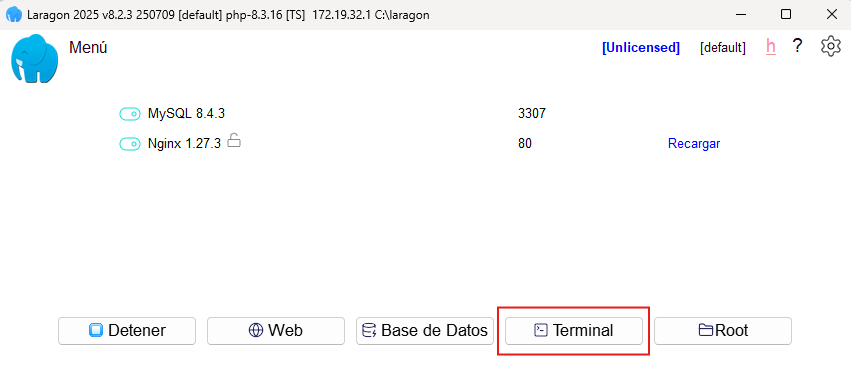
🖼️ Figura 6.23: Panel de Laragon. -
Ejecutar:
composer create-project laravel/laravel nombreProyecto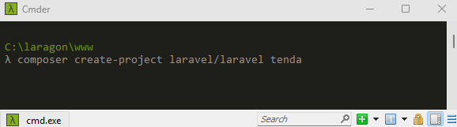
🖼️ Figura 6.24: Ejecutar: composer create-project laravel/laravel nombreProyecto -
Instalación:
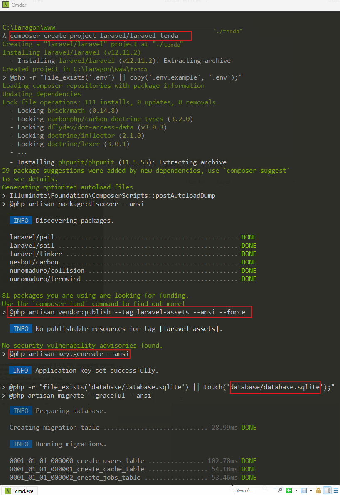
🖼️ Figura 6.25: Recién instalado.
Opción B: Desde Menú
La segunda opción sería desde Menú > Creación rápida de sitio web > Laravel:
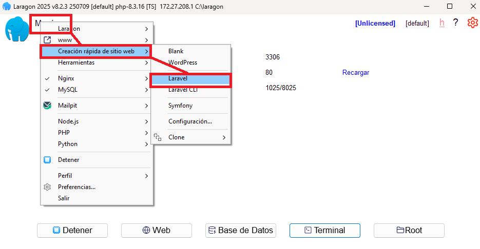
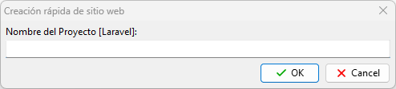
En cualquiera de las dos opciones, cuando hayamos terminado la instalación, podemos acceder al proyecto mediante la URL de nombre nombreDelProyecto.test:
Cuidado
Algunas veces, después de crear el proyecto e intentar poner la url nombreDelProyecto.test, no la reconoce. Para ello:
- Cierra el terminal
- Reinicia, desde el panel de Laragon, los servidores Nginx y MySQL
- Vuelve a introducir, o refrescar, la url
Accede dentro el proyecto y ejecuta Visual Studio Code:
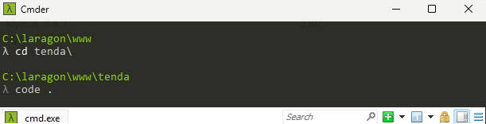
FASE 4: Instalar extensiones en VS Code¶
Abre VS Code desde la terminal (y dentro de la carpeta del proyecto):
code .
No reconoce la orden code .
Si no reconoce la orden code . inserta en la variable PATH, dentro de variables de entorno, la siguiente ruta:
C:\Users\TU_USUARIO\AppData\Local\Programs\Microsoft VS Code
Ve al panel de Extensiones: VS Code te pedirá instalar extensiones; instala las siguientes:
- Laravel Extra Intellisense (Amir)
- PHP Intelephense (Ben Mewburn)
- Laravel Blade Snippets (Winnie Lin)
- Tailwind CSS IntelliSense (Tailwind Labs)
- PHP Debug (xdebug)
- DBCode - Database Management (dbcode.io)
- MySQL: para conectarte a la base de datos y ejecutar scripts.
🖼️ Figura 6.30: Extensión MySQL para Visual Studio Code
FASE 5: Configuración de Bases de Datos¶
5.1. Preparar configuración en .env¶
Abre tu archivo .env y cambia las siguientes variables:
DB_CONNECTION=mysql
DB_HOST=mysql
DB_PORT=3306
DB_DATABASE=tenda
DB_USERNAME=tenda
DB_PASSWORD=root
DB_EXTRA_OPTIONS=
# Variable adicional para evitar warnings por consola
MYSQL_EXTRA_OPTIONS=
5.2. Ejecutar las Migraciones¶
Ahora que la base de datos tenda existe, podemos ejecutar las migraciones:
php artisan migrate:refresh --seed
Ejemplo de respuesta
WARN Migration table not found.
INFO Preparing database.
Creating migration table .............................. 72.26ms DONE
INFO Running migrations.
0001_01_01_000000_create_users_table ................. 441.16ms DONE
0001_01_01_000001_create_cache_table ................. 125.26ms DONE
0001_01_01_000002_create_jobs_table .................. 306.37ms DONE
INFO Seeding database.
Si es la primera vez que ejecutas este comando, es posible que veas un mensaje indicando que no hay migraciones ejecutadas, o que veas las migraciones por defecto de Laravel (usuarios, tokens, etc.). Esto es normal y significa que la conexión funciona correctamente.
5.3. Verificar que la Aplicación Funciona¶
Abre tu navegador web y visita http://tenda.test. Deberías ver la página de bienvenida de Laravel.
Uso del mismo puerto
Si en lugar de ver la página de Laravel, ves la página de Apache de Ubuntu, es porque Apache está usando el mismo puerto.
- Parar Apache ahora
sudo systemctl stop apache2 - Si quieres que no se inicie al arrancar el sistema:
sudo systemctl disable apache2
Práctica: (1) Captura de pantalla requerida
Realiza una captura de pantalla de la página inicial de Laravel funcionando en http://tenda.test.
- Verificar Conexiones de Base de Datos
# Probar conexión MySQL php artisan migrate:status
Al ejecutar el status nos mostrará que "tablas" estan creadas en MySQL.
Ejemplo de respuesta
Migration name ......................................................... Batch / Status
0001_01_01_000000_create_users_table .......................................... [1] Ran
0001_01_01_000001_create_cache_table .......................................... [1] Ran
0001_01_01_000002_create_jobs_table ........................................... [1] Ran
FASE 6: Frontend, calidad de código y depuración¶
6.1. Frontend con Vite y Tailwind CSS¶
- Instalar dependencias de Node.js:
npm install
Ejemplo de respuesta
added 158 packages, and audited 159 packages in 12s
30 packages are looking for funding
run `npm fund` for details
found 0 vulnerabilities
- Añadir estilos personalizados: abre el archivo
resources/css/app.cssy añade al final del archivo (después del contenido existente) los siguientes estilos personalizados:/* Estilos personalizados para la tienda */ .hero-gradient { background: linear-gradient(135deg, #6997ca 0%, #4b7db2 100%); } .product-card { transition: all 0.3s ease; } .product-card:hover { transform: translateY(-5px); box-shadow: 0 10px 25px rgba(0, 0, 0, 0.1); } .category-badge { background: linear-gradient(135deg, #63d1c1 0%, #41b8a5 100%); } .stock-indicator { position: relative; } .stock-indicator::before { content: ''; position: absolute; left: -8px; top: 50%; transform: translateY(-50%); width: 6px; height: 6px; border-radius: 50%; } .stock-indicator.in-stock::before { background-color: #10b981; } .stock-indicator.low-stock::before { background-color: #ef4444; } .dark-mode-toggle { transition: all 0.3s ease; } .dark-mode-toggle:hover { transform: scale(1.1); } .mobile-menu { animation: slideDown 0.3s ease-out; } @keyframes slideDown { from { opacity: 0; transform: translateY(-10px); } to { opacity: 1; transform: translateY(0); } }
No modifiques el contenido existente
El archivo app.css ya contiene configuración importante de Tailwind CSS. Solo añade estos estilos al final del archivo, sin modificar las líneas que ya están.
-
Abrir el archivo Blade principal: abre
resources/views/welcome.blade.phpy sustituye todo su contenido por el siguiente código:<!DOCTYPE html> <html lang="es"> <head> <meta charset="UTF-8"> <meta name="viewport" content="width=device-width, initial-scale=1.0"> <title>Mi Tienda Online</title> <script src="https://cdn.tailwindcss.com"></script> <script> tailwind.config = { darkMode: 'class', theme: { extend: { colors: { primary: { 500: '#6997ca', 600: '#4b7db2', 700: '#316298', }, secondary: { 500: '#63d1c1', 600: '#41b8a5', } } } } } </script> @vite(['resources/css/app.css']) </head> <body class="bg-gray-50 dark:bg-gray-900"> <!-- Header con navegación --> <header class="bg-white dark:bg-gray-800 shadow-lg relative"> <div class="container mx-auto px-6 py-4"> <div class="flex items-center justify-between"> <!-- Logo --> <div class="flex items-center space-x-4"> <a href="/" class="text-2xl font-bold text-primary-600 hover:text-primary-700 transition">🛍️ Mi Tienda</a> </div> <!-- Navegación desktop --> <nav class="hidden lg:flex space-x-8"> <a href="#" class="text-gray-700 dark:text-gray-300 hover:text-primary-600 transition">Inicio</a> <a href="#" class="text-gray-700 dark:text-gray-300 hover:text-primary-600 transition">Productos</a> <a href="#" class="text-gray-700 dark:text-gray-300 hover:text-primary-600 transition">Categorías</a> <a href="#" class="text-gray-700 dark:text-gray-300 hover:text-primary-600 transition">Ofertas</a> <a href="#" class="text-gray-700 dark:text-gray-300 hover:text-primary-600 transition">Contacto</a> </nav> <!-- Botones desktop --> <div class="hidden lg:flex items-center space-x-4"> <button class="text-gray-700 dark:text-gray-300 hover:text-primary-600 transition"> 🛒 Carrito (0) </button> <button class="bg-primary-600 text-white px-4 py-2 rounded-lg hover:bg-primary-700 transition"> Iniciar Sesión </button> <button class="border-2 border-primary-600 text-primary-600 px-4 py-2 rounded-lg hover:bg-primary-600 hover:text-white transition"> Registrarse </button> <!-- Botón de modo oscuro desktop --> <button id="darkModeToggleDesktop" class="text-gray-700 dark:text-gray-300 hover:text-primary-600 transition p-2 rounded-full"> 🌙 </button> </div> <!-- Botones móvil/tablet --> <div class="flex items-center space-x-2 lg:hidden"> <!-- Botón de modo oscuro --> <button id="darkModeToggle" class="text-gray-700 dark:text-gray-300 hover:text-primary-600 transition p-2 rounded-full dark-mode-toggle"> 🌙 </button> <!-- Botón menú móvil --> <button id="mobileMenuToggle" class="text-gray-700 dark:text-gray-300 hover:text-primary-600 transition"> <svg class="w-6 h-6" fill="none" stroke="currentColor" viewBox="0 0 24 24"> <path stroke-linecap="round" stroke-linejoin="round" stroke-width="2" d="M4 6h16M4 12h16M4 18h16"></path> </svg> </button> </div> </div> <!-- Menú móvil --> <div id="mobileMenu" class="lg:hidden hidden mt-4 pb-4 border-t border-gray-200 dark:border-gray-700 mobile-menu"> <nav class="flex flex-col space-y-4 pt-4"> <a href="#" class="text-gray-700 dark:text-gray-300 hover:text-primary-600 transition">Inicio</a> <a href="#" class="text-gray-700 dark:text-gray-300 hover:text-primary-600 transition">Productos</a> <a href="#" class="text-gray-700 dark:text-gray-300 hover:text-primary-600 transition">Categorías</a> <a href="#" class="text-gray-700 dark:text-gray-300 hover:text-primary-600 transition">Ofertas</a> <a href="#" class="text-gray-700 dark:text-gray-300 hover:text-primary-600 transition">Contacto</a> <div class="flex flex-col space-y-2 pt-4 border-t border-gray-200 dark:border-gray-700"> <button class="text-left text-gray-700 dark:text-gray-300 hover:text-primary-600 transition"> 🛒 Carrito (0) </button> <button class="bg-primary-600 text-white px-4 py-2 rounded-lg hover:bg-primary-700 transition text-left"> Iniciar Sesión </button> <button class="border-2 border-primary-600 text-primary-600 px-4 py-2 rounded-lg hover:bg-primary-600 hover:text-white transition text-left"> Registrarse </button> </div> </nav> </div> </div> </header> <!-- Hero Section --> <section class="hero-gradient text-white py-20"> <div class="container mx-auto px-6 text-center"> <h2 class="text-4xl md:text-6xl font-extrabold leading-tight mb-6"> Bienvenido a Mi Tienda </h2> <p class="text-xl md:text-2xl text-blue-100 mb-8 max-w-3xl mx-auto"> Descubre una amplia variedad de productos de calidad. Encuentra lo que buscas al mejor precio. </p> <div class="flex flex-wrap justify-center gap-4"> <button class="bg-white text-primary-600 font-bold py-4 px-8 rounded-full hover:bg-gray-100 transition duration-300 ease-in-out transform hover:scale-105"> Ver Productos </button> <button class="border-2 border-white text-white font-bold py-4 px-8 rounded-full hover:bg-white hover:text-primary-600 transition duration-300 ease-in-out"> Ofertas Especiales </button> </div> </div> </section> <!-- Categorías de Productos --> <section class="py-16"> <div class="container mx-auto px-6"> <h3 class="text-3xl font-bold mb-12 text-center text-gray-900 dark:text-white"> Nuestras Categorías </h3> <div class="grid grid-cols-1 md:grid-cols-2 lg:grid-cols-4 gap-8"> <div class="bg-white dark:bg-gray-800 rounded-lg shadow-lg p-6 product-card cursor-pointer"> <div class="text-4xl text-primary-500 mb-4">📦</div> <h4 class="text-xl font-bold mb-2 text-gray-900 dark:text-white">Categoría 1</h4> <p class="text-gray-600 dark:text-gray-300 mb-4"> Descripción de la primera categoría de productos. </p> <button class="text-primary-600 font-semibold hover:text-primary-700 transition"> Ver Productos → </button> </div> <div class="bg-white dark:bg-gray-800 rounded-lg shadow-lg p-6 product-card cursor-pointer"> <div class="text-4xl text-primary-500 mb-4">🛍️</div> <h4 class="text-xl font-bold mb-2 text-gray-900 dark:text-white">Categoría 2</h4> <p class="text-gray-600 dark:text-gray-300 mb-4"> Descripción de la segunda categoría de productos. </p> <button class="text-primary-600 font-semibold hover:text-primary-700 transition"> Ver Productos → </button> </div> <div class="bg-white dark:bg-gray-800 rounded-lg shadow-lg p-6 product-card cursor-pointer"> <div class="text-4xl text-primary-500 mb-4">⭐</div> <h4 class="text-xl font-bold mb-2 text-gray-900 dark:text-white">Categoría 3</h4> <p class="text-gray-600 dark:text-gray-300 mb-4"> Descripción de la tercera categoría de productos. </p> <button class="text-primary-600 font-semibold hover:text-primary-700 transition"> Ver Productos → </button> </div> <div class="bg-white dark:bg-gray-800 rounded-lg shadow-lg p-6 product-card cursor-pointer"> <div class="text-4xl text-primary-500 mb-4">🎯</div> <h4 class="text-xl font-bold mb-2 text-gray-900 dark:text-white">Categoría 4</h4> <p class="text-gray-600 dark:text-gray-300 mb-4"> Descripción de la cuarta categoría de productos. </p> <button class="text-primary-600 font-semibold hover:text-primary-700 transition"> Ver Productos → </button> </div> </div> </div> </section> <!-- Productos Destacados --> <section class="py-16 bg-gray-100 dark:bg-gray-800"> <div class="container mx-auto px-6"> <h3 class="text-3xl font-bold mb-12 text-center text-gray-900 dark:text-white"> Productos Destacados </h3> <div class="grid grid-cols-1 md:grid-cols-2 lg:grid-cols-3 gap-8"> <div class="bg-white dark:bg-gray-700 rounded-lg shadow-lg overflow-hidden product-card"> <div class="h-48 bg-gray-200 dark:bg-gray-600 flex items-center justify-center"> <span class="text-4xl">📦</span> </div> <div class="p-6"> <h4 class="text-xl font-bold mb-2 text-gray-900 dark:text-white">Producto 1</h4> <p class="text-gray-600 dark:text-gray-300 mb-4">Descripción del primer producto</p> <div class="flex items-center justify-between"> <span class="text-2xl font-bold text-primary-600">€XX</span> <button class="bg-primary-600 text-white px-4 py-2 rounded-lg hover:bg-primary-700 transition"> Añadir al Carrito </button> </div> </div> </div> <div class="bg-white dark:bg-gray-700 rounded-lg shadow-lg overflow-hidden product-card"> <div class="h-48 bg-gray-200 dark:bg-gray-600 flex items-center justify-center"> <span class="text-4xl">🛍️</span> </div> <div class="p-6"> <h4 class="text-xl font-bold mb-2 text-gray-900 dark:text-white">Producto 2</h4> <p class="text-gray-600 dark:text-gray-300 mb-4">Descripción del segundo producto</p> <div class="flex items-center justify-between"> <span class="text-2xl font-bold text-primary-600">€XX</span> <button class="bg-primary-600 text-white px-4 py-2 rounded-lg hover:bg-primary-700 transition"> Añadir al Carrito </button> </div> </div> </div> <div class="bg-white dark:bg-gray-700 rounded-lg shadow-lg overflow-hidden product-card"> <div class="h-48 bg-gray-200 dark:bg-gray-600 flex items-center justify-center"> <span class="text-4xl">⭐</span> </div> <div class="p-6"> <h4 class="text-xl font-bold mb-2 text-gray-900 dark:text-white">Producto 3</h4> <p class="text-gray-600 dark:text-gray-300 mb-4">Descripción del tercer producto</p> <div class="flex items-center justify-between"> <span class="text-2xl font-bold text-primary-600">€XX</span> <button class="bg-primary-600 text-white px-4 py-2 rounded-lg hover:bg-primary-700 transition"> Añadir al Carrito </button> </div> </div> </div> </div> </div> </section> <!-- Footer --> <footer class="bg-gray-800 text-white py-12"> <div class="container mx-auto px-6"> <div class="grid grid-cols-1 md:grid-cols-4 gap-8"> <div> <h5 class="text-xl font-bold mb-4">🛍️ Mi Tienda</h5> <p class="text-gray-400"> Tu tienda de confianza para encontrar los mejores productos. </p> </div> <div> <h6 class="font-bold mb-4">Enlaces Rápidos</h6> <ul class="space-y-2 text-gray-400"> <li><a href="#" class="hover:text-white transition">Sobre Nosotros</a></li> <li><a href="#" class="hover:text-white transition">Política de Privacidad</a></li> <li><a href="#" class="hover:text-white transition">Términos y Condiciones</a></li> <li><a href="#" class="hover:text-white transition">Envíos y Devoluciones</a></li> </ul> </div> <div> <h6 class="font-bold mb-4">Atención al Cliente</h6> <ul class="space-y-2 text-gray-400"> <li>📞 Teléfono de contacto</li> <li>📧 Email de contacto</li> <li>💬 Chat en vivo</li> <li>🕒 Horario de atención</li> </ul> </div> <div> <h6 class="font-bold mb-4">Síguenos</h6> <div class="flex space-x-4"> <a href="#" class="text-gray-400 hover:text-white transition">📘 Facebook</a> <a href="#" class="text-gray-400 hover:text-white transition">📷 Instagram</a> <a href="#" class="text-gray-400 hover:text-white transition">🐦 Twitter</a> </div> </div> </div> <div class="border-t border-gray-700 mt-8 pt-8 text-center text-gray-400"> <p>© 2025 Mi Tienda. Todos los derechos reservados.</p> </div> </div> </footer> <script> // Toggle dark mode functionality function toggleDarkMode() { document.documentElement.classList.toggle('dark'); localStorage.setItem('darkMode', document.documentElement.classList.contains('dark')); // Cambiar el icono según el modo para ambos botones const toggleButton = document.getElementById('darkModeToggle'); const toggleButtonDesktop = document.getElementById('darkModeToggleDesktop'); if (document.documentElement.classList.contains('dark')) { if (toggleButton) toggleButton.innerHTML = '☀️'; if (toggleButtonDesktop) toggleButtonDesktop.innerHTML = '☀️'; } else { if (toggleButton) toggleButton.innerHTML = '🌙'; if (toggleButtonDesktop) toggleButtonDesktop.innerHTML = '🌙'; } } // Toggle mobile menu functionality function toggleMobileMenu() { const mobileMenu = document.getElementById('mobileMenu'); const menuToggle = document.getElementById('mobileMenuToggle'); mobileMenu.classList.toggle('hidden'); // Cambiar el icono del botón if (mobileMenu.classList.contains('hidden')) { menuToggle.innerHTML = ` <svg class="w-6 h-6" fill="none" stroke="currentColor" viewBox="0 0 24 24"> <path stroke-linecap="round" stroke-linejoin="round" stroke-width="2" d="M4 6h16M4 12h16M4 18h16"></path> </svg> `; } else { menuToggle.innerHTML = ` <svg class="w-6 h-6" fill="none" stroke="currentColor" viewBox="0 0 24 24"> <path stroke-linecap="round" stroke-linejoin="round" stroke-width="2" d="M6 18L18 6M6 6l12 12"></path> </svg> `; } } // Check for saved dark mode preference document.addEventListener('DOMContentLoaded', function() { if (localStorage.getItem('darkMode') === 'true') { document.documentElement.classList.add('dark'); const toggleButton = document.getElementById('darkModeToggle'); const toggleButtonDesktop = document.getElementById('darkModeToggleDesktop'); if (toggleButton) toggleButton.innerHTML = '☀️'; if (toggleButtonDesktop) toggleButtonDesktop.innerHTML = '☀️'; } // Configurar los botones const toggleButton = document.getElementById('darkModeToggle'); const toggleButtonDesktop = document.getElementById('darkModeToggleDesktop'); if (toggleButton) toggleButton.onclick = toggleDarkMode; if (toggleButtonDesktop) toggleButtonDesktop.onclick = toggleDarkMode; document.getElementById('mobileMenuToggle').onclick = toggleMobileMenu; }); </script> </body> </html> -
Compilar los assets: Para que se cargue el CSS personalizado, ejecuta el siguiente comando para compilar los assets:
npm run build
Ejemplo de respuesta
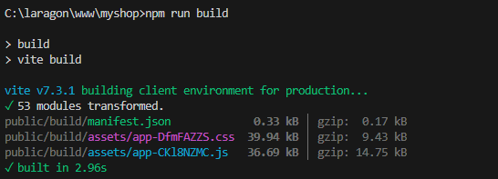
Comandos de compilación para desarrollo continuo
Si se están haciendo cambios frecuentes en CSS/JS, se necesitaría mantener una consola abierta y ejecutar npm run dev. De este modo, se compilan los assets y se actualizan los cambios automáticamente.
Si vuelves a ir al tenda.test, deberías ver tu aplicación Laravel en funcionamiento con los estilos personalizados aplicados.
Práctica: (2) Captura de pantalla requerida
Personaliza tu Welcome:
- Elige una temática para tu tienda online (por ejemplo: librería, tienda de ropa, electrónica, productos ecológicos, etc.).
- Sustituye todos los datos estáticos del ejemplo (nombre de la tienda, secciones, productos, datos de contacto, redes sociales, etc.) por información relacionada con la temática que hayas elegido.
- No modifiques la estructura HTML ni el CSS, solo cambia los textos, imágenes y datos para que reflejen tu tienda personalizada.
Ejemplo: Si eliges una tienda de libros, cambia "Mi Tienda" por el nombre de tu librería, los productos por libros, los datos de contacto por los tuyos, etc.
Así, tu página Welcome será única y adaptada a tu proyecto.
Realiza una captura de pantalla de la página.
6.2. Configurar herramienta Laravel Telescope¶
Laravel Telescope es una herramienta de depuración para Laravel que te permite monitorear solicitudes, excepciones, consultas de base de datos, eventos y más. Aquí te explico cómo integrarlo en tu proyecto:
- Ejecuta este comando en la terminal dentro del directorio de tu proyecto:
composer require laravel/telescope --dev
Ejemplo de respuesta
INFO Discovering packages.
laravel/pail ........................................................... DONE
laravel/sail ........................................................... DONE
laravel/telescope ...................................................... DONE
laravel/tinker ......................................................... DONE
nesbot/carbon .......................................................... DONE
nunomaduro/collision ................................................... DONE
nunomaduro/termwind .................................................... DONE
81 packages you are using are looking for funding.
Use the `composer fund` command to find out more!
> @php artisan vendor:publish --tag=laravel-assets --ansi --force
INFO No publishable resources for tag [laravel-assets].
No security vulnerability advisories found.
Using version ^5.13 for laravel/telescope
php artisan telescope:install
Ejemplo de respuesta
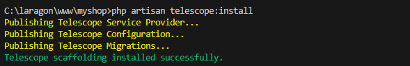
php artisan migrate
Ejemplo de respuesta
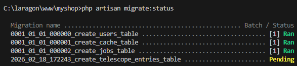 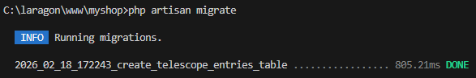
-
Una vez configurado, accede a Telescope en una nueva pestaña o ventana de tu navegador visitando Telescope.
🖼️ Figura 6.36: Menú de Telescope -
Al recargar la página inicial de Laravel verás cómo en la pantalla de Telescope te proporciona información sobre las rutas visitadas.
🖼️ Figura 6.37: Desde Telecope > Requests podremos ver las rutas visitadas
Práctica: (3) Captura de pantalla requerida
Realiza una captura de pantalla de Telescope mostrando las rutas visitadas después de recargar la página inicial. La captura debe incluir tu terminal con el prompt usuario@equipo:~/ruta/proyecto$ visible.
Tómate tu tiempo para revisar las diferentes opciones que tiene Telescope. Es una herramienta muy útil y potente que puede que te ayude durante la realización de las futuras prácticas.
6.3. Instalación de PHPStan para análisis de código estático:¶
- Abre una terminal en la raíz de tu proyecto.
- Ejecuta el siguiente comando para instalar PHPStan:
composer require --dev phpstan/phpstan
Ejemplo de respuesta
#...
82 packages you are using are looking for funding.
Use the `composer fund` command to find out more!
> @php artisan vendor:publish --tag=laravel-assets --ansi --force
INFO No publishable resources for tag [laravel-assets].
No security vulnerability advisories found.
Using version ^2.1 for phpstan/phpstan
-
Crear el archivo
phpstan.neonen la raíz del proyecto:nano phpstan.neon -
Agrega la siguiente configuración:
parameters: level: 5 paths: - app excludePaths: - tests/* -
Ejecuta el análisis:
php vendor/bin/phpstan analyse
Ejemplo de respuesta
Note: Using configuration file /var/www/html/phpstan.neon.
4/4 [▓▓▓▓▓▓▓▓▓▓▓▓▓▓▓▓▓▓▓▓▓▓▓▓▓▓▓▓] 100%
[OK] No errors
Práctica: (4) Captura de pantalla requerida
Realiza una captura de pantalla de tu terminal mostrando el comando php vendor/bin/phpstan analyse ejecutado correctamente sin errores. La captura debe incluir tu prompt usuario@equipo:~/ruta/proyecto$ visible.
6.4. Instalación de PHP_CodeSniffer para validación de estilo¶
- Abre una terminal en la raíz de tu proyecto.
composer require --dev squizlabs/php_codesniffer
Ejemplo de respuesta
#...
83 packages you are using are looking for funding.
Use the `composer fund` command to find out more!
> @php artisan vendor:publish --tag=laravel-assets --ansi --force
INFO No publishable resources for tag [laravel-assets].
No security vulnerability advisories found.
Using version ^4.0 for squizlabs/php_codesniffer
-
Crea un archivo de configuración
.phpcs.xmlen la raíz:nano .phpcs.xml -
Añade la siguiente configuración:
<?xml version="1.0"?> <ruleset name="Laravel Coding Standard"> <rule ref="PSR12"/> <file>app</file> </ruleset> -
Ejecuta la validación:
php vendor/bin/phpcs --standard=PSR12 app --report=summary
Ejemplo de respuesta
PHP CODE SNIFFER REPORT SUMMARY
----------------------------------------------------------------------
FILE ERRORS WARNINGS
----------------------------------------------------------------------
/var/www/html/app/Models/User.php 1 0
----------------------------------------------------------------------
A TOTAL OF 1 ERROR AND 0 WARNINGS WERE FOUND IN 1 FILE
----------------------------------------------------------------------
PHPCBF CAN FIX 1 OF THESE SNIFF VIOLATIONS AUTOMATICALLY
----------------------------------------------------------------------
Time: 40ms; Memory: 12MB
Práctica: (5) Captura de pantalla requerida
Realiza una captura de pantalla de tu terminal mostrando el comando php vendor/bin/phpcs --standard=PSR12 app --report=summary ejecutado. La captura debe incluir tu prompt usuario@equipo:~/ruta/proyecto$ visible.
- Para corregir automáticamente los errores de estilo, puedes usar el siguiente comando:
php vendor/bin/phpcbf --standard=PSR12 app
Ejemplo de respuesta
PHPCBF RESULT SUMMARY
----------------------------------------------------------------------
FILE FIXED REMAINING
----------------------------------------------------------------------
/var/www/html/app/Models/User.php 1 0
----------------------------------------------------------------------
A TOTAL OF 1 ERROR WERE FIXED IN 1 FILE
----------------------------------------------------------------------
Time: 50ms; Memory: 12MB
6.5. Instalación de Laravel Pint para formatear¶
- Abre una terminal en la raíz de tu proyecto.
composer require --dev laravel/pint
Ejemplo de respuesta
#...
83 packages you are using are looking for funding.
Use the `composer fund` command to find out more!
> @php artisan vendor:publish --tag=laravel-assets --ansi --force
INFO No publishable resources for tag [laravel-assets].
No security vulnerability advisories found.
Using version ^1.25 for laravel/pint
-
Crea un archivo de configuración
pint.jsonen la raíz del proyecto:nano pint.json{ "preset": "laravel" } -
Si solo quieres verificar si el código necesita formato sin aplicar los cambios, usa la opción --test:
php vendor/bin/pint --test
Ejemplo de respuesta
.⨯...........................
───────────────────────────────────────────────────────── Laravel
FAIL .................................................... 29 files, 1 style issue
⨯ app/Models/User.php class_attributes_separation
Explicación del error
Laravel Pint detecta como un problema de estilo cuando se usan varios use de traits dentro de una clase y no se deja una línea en blanco entre ellos. Es decir, cada declaración use de un trait debe estar separada por al menos una línea en blanco para cumplir con el estándar de estilo.
Ejemplo de código incorrecto
class User extends Authenticatable
{
/** @use HasFactory<\Database\Factories\UserFactory> */
use HasFactory;
use Notifiable;
// El resto del código
}
Ejemplo de código correcto
class User extends Authenticatable
{
/** @use HasFactory<\Database\Factories\UserFactory> */
use HasFactory;
use Notifiable;
// El resto del código
}
La línea en blanco entre los use de traits es la que soluciona el error reportado por Pint.
- Puedes ejecutar Pint para formatear tu código en cualquier momento con el siguiente comando:
php vendor/bin/pint
Ejemplo de respuesta
.✓...........................
───────────────────────────────────────────────────────── Laravel
FIXED .................................................... 29 files, 1 style issue fixed
✓ app/Models/User.php
Práctica: (6) Captura de pantalla requerida
Realiza una captura de pantalla de tu terminal mostrando el comando php vendor/bin/pint ejecutado correctamente. La captura debe incluir tu prompt usuario@equipo:~/ruta/proyecto$ visible.
Instrucciones de Entrega
- Formato: Entregar un único archivo PDF con todas las capturas.
- Organización: Incluir un título para cada captura explicando qué muestra.
- Calidad: Las capturas deben ser claras y legibles.
- Completitud: Todas las capturas deben mostrar el funcionamiento correcto.
- Personalización: La tienda online debe reflejar claramente la temática elegida con contenido específico y realista.